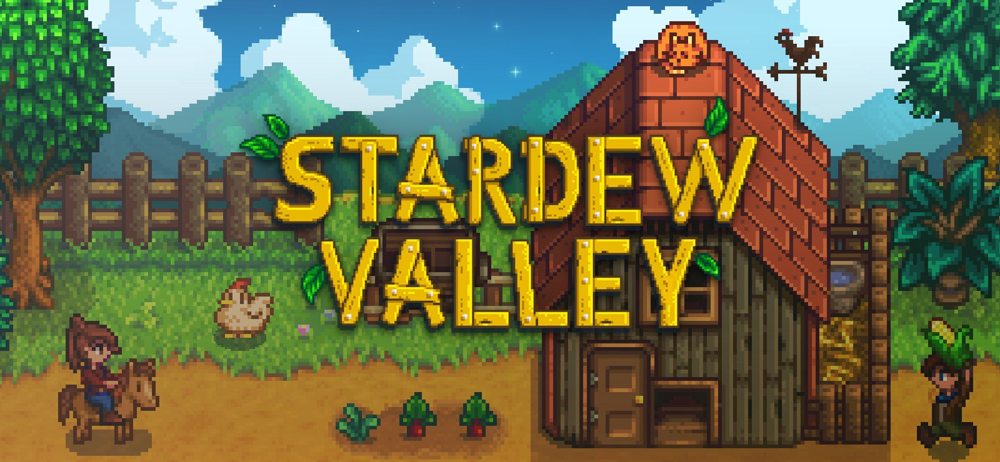
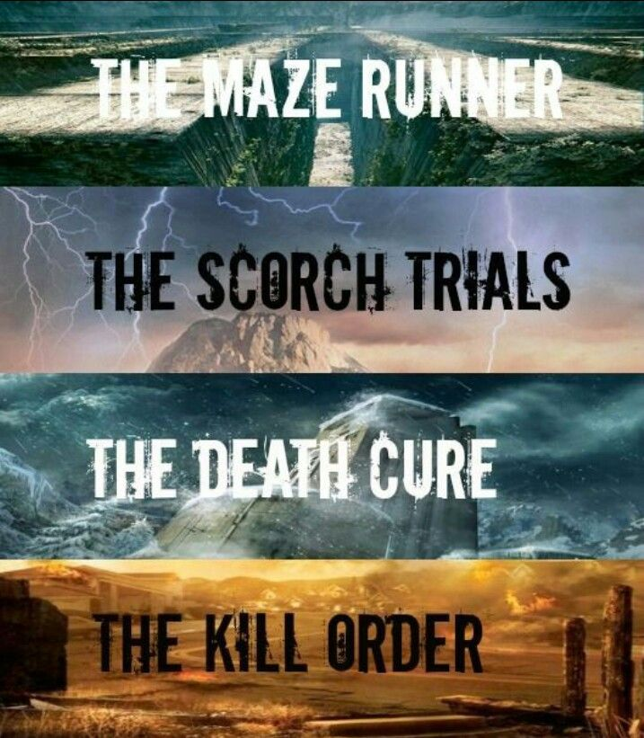

| Navigation | Information |
|---|---|
| Dreams | My first inspirational site and paragraph |
| Hope | My second inspirational site and paragraph. |
| Resume | My Resume |
I love gaming to calm myself. Two of my favorite calm games being
Stardew Valley

and
Slay The Spire.

Reading is also my hobby my favorite author is
James Paterson
but currently my favorite
book collection is by
James Dashner the
Maze Runner" series.

I am a huge nerd. To me a nerd isn't a insult, in fact it is a compliment for me.
I started to get into programming ever since I was around 14 years old. Once I put my hands on my very first electronic which was a psp, I have been fascinated into games, then my first computer. Since I was young I was easily fascinated but nothing has compared to my first experience with electronics. This started down the path of how I want a job that I will enjoy and be around what I enjoy, computers.
I mainly only watch anime and youtube, I don't watch tv really. Realistic shows rarely interest me,(Putting aside DC movies and shows).
So far my favorite anime is
My Hero Academia.

My favorite youtuber is
Daithi De Nogla